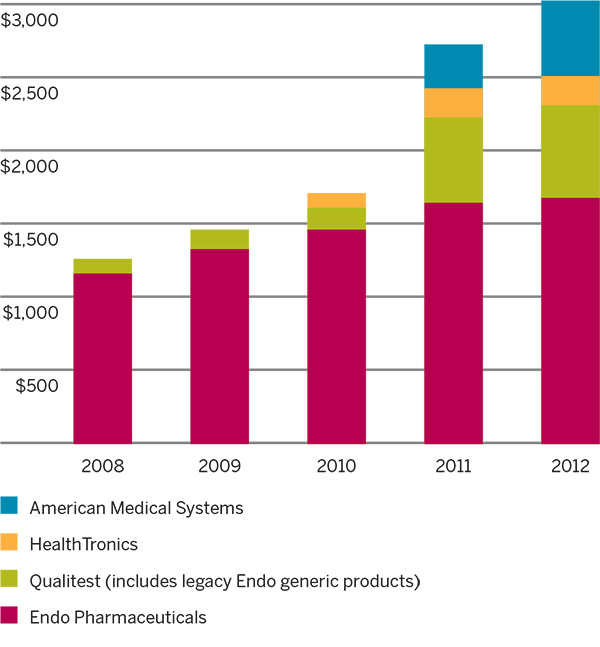

To Our Shareholders
In 2012, we continued our journey to become a healthcare solutions provider by rebranding the company and changing our name to Endo Health Solutions. While structured as four distinct business segments that are focused on branded and generic pharmaceuticals, devices and services, we operate under a common set of guiding principles that enable us to provide quality products to our customers and improve the lives of patients. We believe growth opportunities exist in each business, though challenges in the changing healthcare landscape have and will continue to test our segments.
Net Sales ($ In millions)
We were confronted with numerous challenges over the course of 2012, including declines in procedural volumes in American Medical System's (AMS) women's health business reflecting recent industry shifts following the U.S. Food and Drug Administration's (FDA) September 2011 advisory committee meeting regarding the use of surgical mesh in pelvic organ prolapse, and the disruption of a significant portion of our supply chain as a result of an issue with one of our third party manufacturers, Novartis. Despite these challenges, our revenues exceeded $3.0 billion, an 11 percent increase from 2011. As we continue our evolution, manage to execute on our four business segments and capitalize on marketplace opportunities, our business remains rooted in the pain management and urology sectors.
Our Endo Pharmaceuticals revenue was $1.68 billion and the portfolio revenue rate grew by one percent year-over-year. 2012 was a major transition for several key Endo Pharmaceuticals products. We reached an agreement with Actavis, Inc., resolving an infringement lawsuit over two patents related to LIDODERM® (lidocaine patch 5%), a locally-acting topical medication for the relief of pain associated with post-herpetic neuralgia. The FDA has approved a generic version of LIDODERM, and we expect to see Actavis' generic version of LIDODERM enter the market in mid-September 2013.
In March 2012, we launched a reformulated version of OPANA® ER (oxymorphone HCl) with INTAC® technology designed to be crush resistant. OPANA ER is now available in seven dosage strengths: 5, 7.5, 10, 15, 20, 30 and 40mg. We believe that using innovative crush-resistant technologies is important for patient and societal safety, as these formulations may reduce the rates of some common methods of abuse including pill crushing.
Based on preliminary results from interim analyses of two independently-run, on-going epidemiology studies on the effect of the reformulation on the rates of abuse of OPANA ER, the reported prescription-adjusted rate of abuse of the reformulated OPANA ER dropped more than 39 percent as compared to historical (2011) baseline abuse rates of the original OPANA ER formulation during the period April 1, 2012 through December 31, 2012. Additionally, the reported rate of abuse of the crush-resistant reformulated OPANA ER product was approximately 79 percent lower than the reported rate of abuse of the crushable oxymorphone extended-release generics, during the same period. We believe this data, although preliminary, supports our position that non-crush-resistant formulations of long-acting opioids should not be available on the market if abuse-deterrent formulations are available.
Today, our Qualitest portfolio ranks sixth in U.S. drug prescription volume, based on IMS Health data for the 12 months ending December 31, 2012. Market opportunities continue to exist in generic drug manufacturing, where eight out of every 10 prescriptions filled in the United States are generic drugs. In 2012, our Qualitest segment reached revenues of $633 million and achieved an 18 percent year-over-year growth in dosages manufactured.
As a leading manufacturer of controlled substances in the United States, Qualitest holds a competitive advantage in the marketplace. Pain products containing controlled substances as well as liquid medications represented nearly 60 percent of Qualitest's net sales in 2012. These products present a higher barrier-to-entry than the broader generics industry and are a strong driver for continued value creation.
Since Endo acquired Qualitest in 2010, we have expanded manufacturing output significantly. Qualitest manufactured approximately 10 billion doses in 2010 and that has increased to more than 14.1 billion doses in 2012. In order to capture future revenue growth opportunities, we plan to continue expanding production capacity over the next several years through capital investment, more efficiently utilizing our facilities, and selective outsourcing.
In urology, medical devices and procedures are revolutionizing medical practice as the demand for new treatments continues to rise. Endo is well-positioned to answer this call for new and better therapies, and to maximize on expanded opportunities for future growth in this market segment.
AMS is a leader in minimally invasive surgical products and its therapies treat very common urological diseases that are associated with aging. The aging baby boomer population has provided a long runway for growth for the segment and will likely lead to increased demand for such devices. In 2012, more than 315,000 patients were treated with AMS devices. AMS's sales have grown from $100 million as a standalone company in 2000 to $504 million in 2012, and we expect to return to low-single digit growth on a pro forma basis in 2013.
In each of the AMS lines of business – men's health, women's health, and benign prostatic hyperplasia (BPH) – opportunities exist for product development and innovation, international expansion, organic growth and commercial excellence. Device offerings expanded in 2012, including the global launch of three women's health products, and the launch of a new MoXy® 650kJ fiber for the class-leading GreenLight XPS® system.
Net sales declines in women's health were driven by year-over-year declines in procedural volumes reflecting recent industry shifts following the FDA's September 2011 advisory committee meeting regarding the use of surgical mesh in pelvic organ prolapse. AMS remains focused on educational activities as part of an overall effort to continue to encourage patients and physicians to discuss the risks and benefits of AMS's surgical mesh devices as an important treatment option for patients who suffer from stress urinary incontinence and pelvic organ prolapse. In order to return AMS to growth in 2013, it will be essential to stabilize the women's health business in the United States, expand our reach in key men's and prostate health products, and expand operating margins.
AMS also completed enrollment in 2012 for its randomized, prospective, multicenter study (known as the Goliath study) designed to compare GreenLight XPS and transurethral resection of the prostate (TURP). The study – powered for safety and effectiveness, and including healthcare economic data for the treatment for enlarged prostate – enrolled 291 subjects at 30 investigational sites in 11 different European countries. Results of the study will be published in 2013, and, if positive, could help show doctors and patients the benefit of utilizing GreenLight XPS versus TURP.
The interplay between AMS and our HealthTronics segment has allowed for testing and planning for current products and services while evaluating innovation in the marketplace through the eyes of the physician. We believe that this collaboration provides us with a competitive advantage. Together, AMS and HealthTronics have built a strong presence in the urology marketplace where they enjoy broad and comprehensive relationships with providers. These opportunities will allow us to create more organic value from these two segments than either could have achieved on its own.
Within the HealthTronics segment, electronic health records (EHR) represent an important service offering for us in the urology channel. Currently, approximately 2,200 providers are using HealthTronics EHR technologies. We believe that owning these EHR platforms provides HealthTronics with several options for additional revenue opportunities in the future of outcomes-based reimbursement, patient demand for transparent effectiveness measures, and the continued push towards data to enable lower cost, better quality healthcare.
Maximizing Opportunities
Our evolution into Endo Health Solutions, composed of our four business segments, now encompasses more products, added production capacity, greater research and marketing expertise, a larger and more robust pipeline, new platforms for growth and more treatment options to offer physicians and their patients than it did just three years ago. Where Endo's story in 2012 focused on addressing challenges that faced the business, our story in 2013 will be focused on executing in our four lines of business and continuing integration.
Opportunities exist in our Endo Pharmaceutical segment by targeting key markets in the healthcare industry, and in AMS to broaden our medical device presence internationally, with new prospects for market expansion and revenue growth. Opportunities also lie in our pipeline to expand our offerings and sustain our record of leadership in the treatment of pain. This includes the development of an investigational chronic pain product, BEMA® Buprenorphine. If approved, this drug will enhance our branded pain management portfolio and contribute to growth starting as early as 2015.
In 2013, we will continue to streamline efficiencies in the business to improve overall performance and further focus on maximizing our investments in key growth markets. As part of our streamlining process following an aggressive acquisition period, we've aligned key segments of our company to strengthen our employee collaboration capabilities, and overall enhance our performance. In order to provide a more efficient facility infrastructure for the company, a new Finance Shared Services Center was established in Austin, TX to support business operations across the enterprise, new R&D alignments were implemented, a new AMS-EMEA (Europe, Middle East and Africa) office was established in Amsterdam, and construction of a new company headquarters, located in Malvern, PA. was completed.
As I retire from my position as Endo's CEO, I remain enthusiastic about what is to come for the organization. Our progress in the past five years together created fertile ground for Endo to nurture its growth. The vision we embraced is much bigger than one employee or one leader, it was something each colleague developed together and it will continue to inform enterprise decisions for years to come. Endo will continue to be tested in its quest towards fulfilling its vision, but the end reward will provide future generations with a more holistic healthcare experience than ever thought possible. I have full confidence in Endo's future and its employees in creating sustainable growth for the company.
Sincerely,
David P. Holveck
Retired President and Chief Executive Officer
Looking Forward
Over the last several years, Endo has grown from a $1.3 billion business in 2008 – heavily dependent on its leading product, LIDODERM® – to a diversified $3.0 billion healthcare solutions company in 2012. Although during this period Endo achieved much success, in 2012 the company's successes were impacted by numerous challenges. However, the diversification strategy we implemented under the leadership of Dave Holveck has left Endo poised for a new chapter in its short history. Our company now has four key business drivers: branded and generic pharmaceuticals, devices and services, where just five years ago we were essentially a specialty branded pharmaceuticals business.
Dave retired in March 2013, and we thank him for his vision and leadership. As we transition to new leadership, the Board is focused on improving operating efficiency and execution as well as continuing integration of our four businesses.
Among the key attributes we were looking for in Endo's CEO was an executive with strong leadership skills, substantial operating and integration experience and knowledge of our markets. We wanted a CEO with the ability to drive outcome-oriented approaches to increase shareholder value using Endo's unique position in the marketplace. We believe Rajiv De Silva possesses these abilities and we are confident that he will apply his substantial operational experience and outstanding leadership skills to build upon the foundation that has been created over the last few years. His track record in generating growth and profitability, managing complex integrations, and delivering for shareholders is sure to serve us well.
The Board and the entire Endo team are excited about what Rajiv can accomplish here – and we look forward to working with him to enhance shareholder value.
Sincerely,
Roger Kimmel
Chairman, Board of Directors
Welcome Message from Rajiv De Silva
It is an honor and privilege to serve as your new CEO and to lead a growing and dynamic organization. From my perspective, Endo occupies a unique position in the healthcare market – able to deliver innovative products and services across multiple platforms with clear strengths in the medically important areas of pain management and urology – and I am excited to work with my Endo colleagues to further strengthen our company in these spaces.
Endo has experienced rapid transformation in the last several years. As with many companies that experience periods of growth and evolution, Endo has seen much success, as well as challenges and obstacles. I am committed to leading the Endo team in delivering meaningful products and services to patients and customers, and enhancing shareholder value. I look forward to working with the Endo team to build on its strengths and deliver growth while also improving cost management, execution and integration to enable Endo to make the most of its many opportunities.
As the healthcare industry continues to evolve, we must work to maximize our opportunities and continuously develop strategies that will enhance our company in the marketplace. Although we still have a lot of work ahead, our foundation is strong, and I am eager to be part of Endo's next chapter.
Sincerely,
Rajiv De Silva
President and Chief Executive Officer